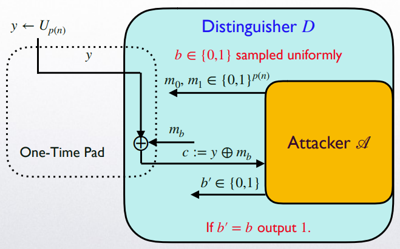

加密学之壹 - Cryptographic Primitives
这一学期糊里糊涂选到了 CS 的高阶课 COMP3357，虽然死了很多脑细胞，但是学到了很多。加密学很有意思，Ravi 讲的很好，TA Zhang Chengru 也很认真负责，上起来很有实感。
之前的笔记 (这里) 太全面肯定不会再仔细看了，于是想趁暑假做一个 digest，让未来的自己也能回忆起一些有趣的，令人大呼巧妙 (Eureka!) 的内容。
我打算将 digest 分为 3 parts，p1 (本文) 将主要介绍加密学概念中的有趣内容；p2 则侧重于数学 (数论，群论) 等知识在加密学中的应用；而 p3 则是对 p2 的延申，将会介绍加密学中的困难问题 (hard problems) 与单向函数 (one-way function)，其与 p2 中的相关知识存在密切的联系。
This article is a self-administered course note.
It will NOT cover any exam or assignment related content.
Cryptographic Primitives
In this course, 7 kinds of cryptographic primitives are covered:
- Encryption scheme
- Message authentication code (MAC)
- Hash function
- Key-exchange protocol
- Identification scheme
- Digital signature
- One-way function
In different application scenarios, we need different kinds of security:
- Confidentiality: only trusted party could understand the secret message. Secure encryption scheme provides confidentiality.
- Integrity: ensures the information has NOT been tampered in transmission. MAC and digital signature provide integrity.
- Non-repudiation: sender can NOT later deny that the message was sent. Digital signature provides non-repudiation.
- Authenticity, Public verifiability, transferability...
Also, for a cryptographic primitive, the definition of security varies in face of different threat model.
In general, the security of a cryptographic primitive is defined by an experiment (or game). The idea of reduction (归约) is critical in designing such experiments.
- Encryption scheme: Passive eavesdropping (EAV) security, Chosen-plaintext-attack (CPA) security, Chosen-ciphertext-attack (CCA) security, Perfect secrecy
- Message authentication code (MAC): Extentially unforgeable under a chosen-message attack
- Hash function: Preimage resistance, Second-preimage resistance, Collision resistance
- Key-exchange protocol: EAV security
- Identification scheme: EAV security
- Digital signature: Extentially unforgeable under a chosen-message attack
- One-way function: Non-invertibility
Kerckhoff's Principle
Kerckhoff's principle indicates that the unknowability of secret key \(k\) is critical to ensure the security of cryptographic primitive. This principle also makes the storage and transmission of keys extremely important.
Eureka moment!
第一次学习柯克霍夫定律的时候确实有点惊艳的感觉：一个安全的加密方案竟然必须建立在其所有细节向敌手暴露的前提之下。尽管看上去有点反常识，仔细想想却是有道理的；如果连加密方案本身都需要进行保密，那它的应用价值将大大减少，更遑论加密算法的标准化与通用化了。
而且由此可见现在流行的加密方案都是久经考验的：想象一下，由于算法的所有细节都是公开的知识，一定会有无数人尝试去破解；一个加密方案能够稳定的存在，这一事实本身就能证明其安全性。
Perfect Secrecy and its Relaxation
Perfect secrecy is the strongest definition of security.
Probability Definition
- \(\Pr[M=m|C=c]=\Pr[M=m]\) for all \(m, c\)
- (perfect indistinguishability) \(\Pr[M=m_0|C=c]=\Pr[M=m_1|C=c]\) for all \(m_0,m_1,c\)
Adversarial Indistinguishability Experiment
Encryption scheme \(\Pi=\langle Gen, Enc, Dec \rangle\), \(Enc\) takes \(k, m\) as input (in currying style \(Enc_k\)), \(Dec\) takes \(k, c\) as input (in currying style \(Dec_k\)).
Threat model: adversary \(\mathscr{A}\) with unbounded computational power
- \(\mathscr{A}\) selects 2 plaintexts \(m_0, m_1\).
- Challenger \(\mathscr{C}\) generates a random bit \(b\in\{0,1\}\), and runs \(Enc_k(m_b)\to c\). \(c\) is called the challenge ciphertext and is given back to \(\mathscr{A}\).
- \(\mathscr{A}\) finally outputs a bit \(b'\), indicating that \(c\) corresponds to the plaintext \(m_{b'}\).
- \(\mathscr{A}\) successes if \(b'=b\).
Perfect secrecy of \(\Pi\) indicates that NO adversary could success in the above experiment with probability greater than \(\frac{1}{2}\). \(\Pr[\mathtt{PrivK}^{eav}_{\mathscr{A}, \Pi}(n)=1]=\frac{1}{2}\).
This means that adversary has NO better choice than simply outputting a random guess.
Shannon's Theorem
One-time pad is a typical perfectly secure scheme: adversary can never derive \(m\) from a given \(c\) if he does not know the secret key \(k\). In OTP, \(|\mathscr{K}|=|\mathscr{M}|=2^n\).
In real life, perfectly secure encryption scheme has little application value: If 2 parties have the ability to safely transmit a key of the same length as the plaintext, then obviously it is better to transmit the plaintext directly.
Relaxation: Computational Secrecy
The relaxed definition of perfect secrecy is more frequently used in reality:
- Polynomial probabilisitic time (PPT) adversary (deprived of unbounded computational power)
- adversary is allowed to success with negligible advantage
It is called asymptotic computational secrecy.
Eureka moment!
相信学习过密码学的同学所接触的第一个加密方法都是一次性密码本 One-time pad，这也是最令我惊叹的加密方法之一：其操作是那样的简单优美，只需要将明文和密钥异或起来即可生成密文。
然而，就是这么简单的算法，居然满足完美安全的定义：也就是说，按照 OTP 算法生成的密文 \(c\)，只要我将密钥 \(k\) 彻底销毁，那么全宇宙就没人能够得到其对应的明文 \(m\). 即使是拥有无穷算力的超高级文明，也无法获取关于 \(m\) 的任何信息，哪怕 \(1\) bit 都不行！
这不禁让我的中二之魂熊熊燃烧……
P.S. 事后我想了想，如果 \(m\) 是有意义的一段文字，那么超高级文明得到 \(m\) 并不会很难。所以超高级文明永远无法得到我随便乱想的一段乱码 \(m\) ! (骄傲)
Pseudorandomness
Randomness is a very important concept in cryptography (and not only in cryptography). Although the concept of randomness is often mentioned, what exactly is randomness and how is it implemented?
Our understanding of the concept of "randomness" cannot be separated from the physical phenomena in real life. For example, the sequence of numbers obtained by rolling a six-sided die multiple times is clearly "random"; this randomness, guaranteed by physical experiments, is called True randomness.
True random number generation is technically demanding and inefficient: a true random number generator (TRNG) must rely on some random external physical phenomenon as the information entropy resource, such as the trajectory of the user's mouse movement, thermal noise from resistors and oscillators, computer hardware noise, etc.
TRNGs that generate random numbers with the help of external physical phenomenon is inefficient. Only pure algorithm could meet the requirement of producing many numbers efficiently. Therefore, the concept of pseudorandomness is put forward: Pseudorandom numbers are numbers that appear random.
Pseudorandom number generators (PRGs) are the generators that efficiently generate pseudorandom number sequence. PRG takes a short seed \(s\) and produces a pseudorandom string \(G(s)\).
How to define "appear random"? There are several PPT statistical tests that used to check whether a number sequence is statistical independent or not. If a number sequence could pass all the statistical tests, it is regarded as random, no matter it is generated by TRNGs or PRGs.
Essentially, pseudorandom number sequence (or say PRGs) is deterministic : for a fixed seed \(s\), \(G(s)\) always remains the same. However, if an adversary observing \(G(s)\) without knowing the seed \(s\), he can NOT distinguish \(G(s)\) from a truly random number sequence \(r\) with non-negligible advantage.
We could see that in the definition of PRGs:
\(G\) is a PRG if for every PPT distinguisher \(D\), \(|\Pr_{s\leftarrow U_n}[D(G(s))=1]-\Pr_{r\leftarrow U_{p(n)}}[D(r)=1]|\leq \varepsilon(n)\).
Note that \(p(n)\) is the expansion factor of PRG: \(G\) expands the seed \(s\) (\(|s|=n\)) to \(G(s)\) (\(|G(s)|=p(n)\))
Eureka moment!
伪随机也是我觉得十分巧妙的一个概念。
其实，本质上来说，伪随机和加密十分相似。加密算法通过密钥 \(k\) 的不可知性保证密文 \(c\) 的不可解读性；而伪随机数生成器则通过种子 \(s\) 的不可知性保证生成的数串 \(G(s)\) 的 (伪) 随机性。
这也可以说是柯克霍夫定律威力的延伸体现。
The Idea of Reduction
Reduction (or simulation) is a powerful idea in computer science. Especially in cryptography, we use the idea of reduction to prove security of some cryptographic primitives.
We will illustrate the idea of reduction with a concrete example.
Example: Pseudo One-time Pad
Try to prove: Pseudo OTP \(\Pi\) is EAV-secure if \(G\) is a PRG.
We reduce "Pseudo OTP \(\Pi\) is EAV-secure" to "\(G\) is a PRG".
Construct a distinguisher \(D\) for \(G\) given \(\mathscr{A}\) attacking \(\Pi\) as its subroutine.
- \(D\) runs \(\mathscr{A}(1^n)\).
- \(\mathscr{A}\) outputs \(m_0,m_1\).
- \(D\) generates a random bit \(b\in\{0,1\}\) and obtain \(r\) from PRG challenger.
- \(D\) sends \(m_b\oplus r\) back to \(\mathscr{A}\).
- \(\mathscr{A}\) finally outputs \(b'\).
- If \(b'=b\), \(D\) outputs \(1\), otherwise \(0\).

Considering the following 2 cases:
\(r\leftarrow U_{n}\) is truly random
In this case, the view of \(\mathscr{A}\) is distributed identically to that of a true OTP protocol \(\widetilde{\Pi}\) which obeys perfect secrecy, therefore \(\Pr_{r\leftarrow U_{n}}[D(r)=1]=\Pr[b=b']=\Pr[\mathtt{PrivK}^{eav}_{\mathscr{A}, \widetilde{\Pi}}(n)=1]=\frac{1}{2}\).
\(r:=G(s)\) for some \(s\) (\(r\) is pseudorandom)
In this case, the view of \(\mathscr{A}\) when run as a subroutine of \(D\) is that of the adversarial indistinguishability experiment of the Pseudo OTP \(\Pi\), therefore \(\Pr_{s\leftarrow U_m}[D(G(s))=1]=\Pr[b=b']=\Pr[\mathtt{PrivK}^{eav}_{\mathscr{A}, \Pi}(n)=1]\).
Reduction process:
Since \(G\) is PRG: \(|\Pr_{r\leftarrow U_{n}}[D(r)=1]-\Pr_{s\leftarrow U_m}[D(G(s))=1]|\leq \varepsilon(n)\).
From the 2 equality above: \(|\Pr[\mathtt{PrivK}^{eav}_{\mathscr{A}, \Pi}(n)=1]-\Pr[\mathtt{PrivK}^{eav}_{\mathscr{A}, \widetilde{\Pi}}(n)=1]|\leq \varepsilon(n)\).
Therefore \(\Pr[\mathtt{PrivK}^{eav}_{\mathscr{A}, \Pi}(n)=1]\leq \varepsilon(n)+\frac{1}{2}\), which indicates that pseudo OTP is EAV-secure.
Reduction Logic
Understand the abstraction is the key to understand reduction.
If we want to reduce the security of \(\Pi'\) to the security of \(\Pi\), we need to construct an adversary \(\mathscr{S}\) for \(\Pi\) given the adversary \(\mathscr{A}\) for \(\Pi'\) as its subroutine, which is to say, \(\mathscr{S}\) employs (runs) \(\mathscr{A}\) as a black box abstraction function (Encapsulation).
The reduction involves 4 logic statements:
- \(p:\) \(\exists\ \mathscr{S}\) that is able to attack \(\Pi\) with non-negligible advantage.
- \(q:\) \(\exists \ \mathscr{A}\) that is able to attack \(\Pi'\) with non-negligible advantage.
- \(\lnot p:\) \(\Pi\) is secure, which means \(\mathscr{S}\) that could successfully attack \(\Pi\) is NOT exist.
- \(\lnot q:\) \(\Pi'\) is secure, which means \(\mathscr{A}\) that could successfully attack \(\Pi'\) is NOT exist.
If \(\mathscr{S}\) is constructed successfully, it will be able to attack \(\Pi\) with non-negligible advantage. Therefore we could conclude that if \(\mathscr{A}\) could attack \(\Pi'\) successfully, \(\mathscr{S}\) (which takes \(\mathscr{A}\) as its subroutine) could attack \(\Pi\). The corresponding logic is \(q\to p\).
According to the contrapositive statement, we have \(\lnot p\to \lnot q\), which implys that the security of \(\Pi\) guarantees the security of \(\Pi'\). Therefore, the reduction is completed: we reduce the security of \(\Pi'\) to the security of \(\Pi\).
Eureka moment!
归约应该是整个密码学安全性证明中的核心思想之一。
第一次接触归约时 (即上文中提到的对伪一次性密码本安全性的证明) 真的思考了超级久才把整个逻辑捋清。但一旦想明白了就会觉得实在是巧妙：假设攻击方案 \(A\) 的敌手存在，我们直接将该敌手封装 (encapsulate) 起来作为攻击已知安全的方案 \(B\) 的敌手的子程序 (subroutine)。如果构建成功，根据逆否命题就能完成归约。
归约证明最难的地方应该在于 simulator \(\mathscr{S}\) 的设计：其与子程序 \(\mathscr{A}\) 的交互必须是黑盒式的，且无法让 \(\mathscr{A}\) 察觉到与其互动的并不是 challenger \(\mathscr{C}\)，而是某个 simulator \(\mathscr{S}\)。
在整个课程的学习中了解到了很多很妙的归约，例如 Pseudorandom function/permutation 构建的加密方案的 CPA 安全性证明，Hash-MAC 与 Hash-Sign 方案的安全性证明，Authenticate encryption 的安全性证明，RSA 硬核谓词 (Hard-core predicates) 的证明，RSA-FDH (Full-Domain Hash) signature 的不可伪造性证明，Fiat-Shamir transformation 的证明，Schnorr identification 的安全性证明……
光是写出来就有一大串，就不具体介绍了 (我有一个绝妙的证明.jpg)
Symmetric or Asymmetric Key(s)
The concept of symmetry and asymmetry refers to the keys distribution in 2 parties (sender and receiver). If the information is encoded and decoded with the same key \(k\), we say the scheme is symmetric. Otherwise, it is asymmetric.
Private Key Encryption and MAC
Private key encryption scheme and message authentication code (MAC) are symmetric primitives. In fact, private key encryption scheme is also called symmetric encryption.
Private key encryption: Alice encrypts the message \(m\) by running \(Enc_k(m)\to c\). Bob decrypts the ciphertext \(c\) by running \(Dec_k(c)\to m\).
Message authentication code (MAC): Alice authenticates \(m\) by running \(Mac_k(m)\to t\). Bob verifies the tag \(t\) by checking \(Vrfy_k(m,t)\) equals to \(1\) or not.
Public Key Encryption and Digital Signature
Public key encryption scheme and digital signature are asymmetric primitives. Public key encryption scheme is also called asymmetric encryption.
In asymmetric primitives, the key-generation algorithm \(Gen(1^n)\) will produce a pair of keys \(\langle pk, sk \rangle\). The public key \(pk\) is publicly distributed, while private key \(sk\) is only held by one party.
Public key encryption: Alice encrypts the message \(m\) with public key \(pk\) by running \(Enc_{pk}(m)\to c\). Bob decrypts the ciphertext \(c\) with private key by running \(Dec_{sk}(c)\to m\).
Digital signature: Alice signs \(m\) with private key by running \(Sign_{sk}(m)\to \sigma\). Bob verifies the signature \(\sigma\) by checking \(Vrfy_{pk}(m, \sigma)\) equals to \(1\) or not.
Note that in public key encryption, receriver Bob holds the private key; while in digital signature, sender Alice holds the private key.
MAC Versus Digital Signature
MAC and digital signature both provide integrity. However, the asymmetry of digital signature guarentees more than that.
Public Verifiability
A third party not directly participating in the protocol should also be able to verify the generated values. It is based on the publicity of \(pk\). MAC cannot achieve this since \(k\) must be kept secret for the defence of a malicious third party.
Transferability
Non-repudiation
Once the signer signs a message \(m\), he can NOT deny having done so afterwards. It is based on the secrecy of \(sk\): \(sk\) is only known by signer and is paired up with \(pk\). Anyone with \(pk\) could convince that signer holds \(sk\) with zero-knowledge of \(sk\).
Randomized Algorithm
Randomized algorithm, as opposed to deterministic algorithm, mapping the same input to several random outputs. The randomness is guaranteed by some random tapes implemented by TRNGs, PRGs, PRFs or PRPs.
Randomized algorithms are essential to build secure cryptographic primitives: in particular, Any CPA-secure encryption scheme must be randomized.
For a deterministic encryption scheme, there is a trivial CPA adversary \(\mathscr{A}\): \(\mathscr{A}\) ask \(Enc_k(\cdot)\) to encrypt \(m_0,m_1\) first and obtain \(c_0=Enc_k(m_0), c_1=Enc_k(m_1)\). Then when it gets challenge ciphertext \(c\), \(\mathscr{A}\) simply compares \(c\) to \(c_0,c_1\). If \(c=c_0\), output \(0\), and if \(c=c_1\), output \(1\).
Also we could see that, for public encryption scheme, EAV-security is equivalent to CPA-security since adversary knows public key \(pk\). (equivalent to hold the encryption oracle \(Enc_{pk}(\cdot)\))
Reference
This article is a self-administered course note.
References in the article are from corresponding course materials if not specified.
Course info:
Code: COMP3357, Lecturer: Dr. Ravi. Ramanathan, TA: Zhang Chengru
Course textbook:
Introduction to Modern Cryptography (2nd edition), Katz, J. & Lindell, Y., (2015), CRC Press, view